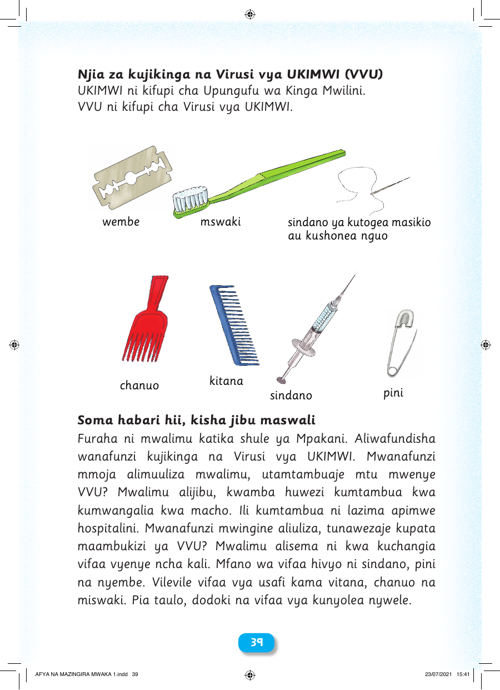

Njia za kujikinga na Virusi vya UKIMWI (VVU) UKIMWI ni kifupi cha Upungufu wa Kinga Mwilini. VVU ni kifupi cha Virusi vya UKIMWI. Vifaa vinavyochangia maambukizi ya VVU wembe mswaki sindano ya kutogea masikio au kushonea nguo kitana chanuo pini sindano Soma habari hii, kisha jibu maswali Furaha ni mwalimu katika shule ya Mpakani. Aliwafundisha wanafunzi kujikinga na Virusi vya UKIMWI. Mwanafunzi mmoja alimuuliza mwalimu, utamtambuaje mtu mwenye VVU? Mwalimu alijibu, kwamba huwezi kumtambua kwa kumwangalia kwa macho. Ili kumtambua ni lazima apimwe hospitalini. Mwanafunzi mwingine aliuliza, tunawezaje kupata maambukizi ya VVU? Mwalimu alisema ni kwa kuchangia vifaa vyenye ncha kali. Mfano wa vifaa hivyo ni sindano, pini na nyembe. Vilevile vifaa vya usafi kama vitana, chanuo na miswaki. Pia taulo, dodoki na vifaa vya kunyolea nywele. 3399 AFYA NA MAZINGIRA MWAKA 1.indd 39 23/07/2021 15:41